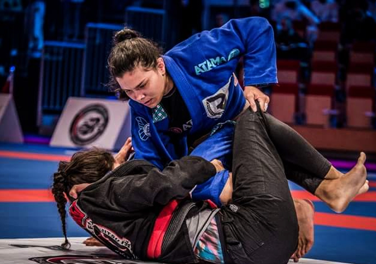
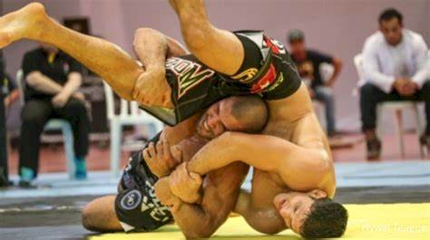

Com a popularização da arte também foram surgindo algumas modalidades dentro da prática. Aqui falaremos um pouco sobre.
Com o passar do tempo, o jiujitsu se transformou em um esporte com regras próprias e campeonatos oficiais organizados por confederações, estipulado por regras básicas e regras de pontuação. Algumas regras mais técnicas de pontuação podem variar por confederações, mas falaremos apenas sobre Oficiais e Federais.
As Regras básicas PERMITIDAS no competitivo são: Quedar o adversário, imobilizar, neutralizar, estrangular, pressionar e também torcer articulações(exceto os dedos).
NÂO são permitidos: socos e chutes, cotoveladas, cabeçadas, pisadas, mordidas, puxões de cabelo, enfiar os dedos nos olhos, atingir órgão genitais, torcer os dedos e algumas chaves de calcanhar.
Com as competições organizadas pelas confederações o esporte começou a aderir Ranking Mundial, de acordo com a faixa de graduação e também com a categoria etária. Sendo os prêmios cada vez mais atrativos, já que esta modalidade cresceu muito com a ascensão do MMA.
O jiu jitsu No-Gi é uma variação do tradicional. No jiu jitsu tradicional os praticantes utilizam um Kimono(Gi) como vestimenta. No sem pano, não utiliza o kimono, e usa-se roupas mais coladas, como lycras e calças e bermudas de compressão, dependendo do evento até sem camisa, o objetivo é não dar pegadas ao adversário.
Essa modalidade vem crescendo cada vez mais, inclusive a Federação Internacional de Jiu-Jitsu (IBJJF) tem dado maior importância ao Nogi, dando Ranking Mundial, de acordo com as graduações de faixas e divisões de idade.
As principais academias já têm horários específicos para o treino dessa modalidade, principalmente aquelas que têm lutadores de MMA. A principal diferença está relacionada as pegadas, que são unicamente nas partes do corpo, como punhos e pescoço, não podendo segurar no próprio uniforme, nem no do adversário.
A ausência de pano torna a luta mais escorregadia e dinâmica, obrigando o atleta a trabalhar um jogo mais de esgrimas e domínio de nuca, é mais difícil se manter em uma posição confortável para dar aquela “amarrada” na luta, já que no com pano os atletas conseguem "amarrar" a luta quando está ganhando por pontos por ex.
O ADCC surgiu por volta de 1998 em Abu Dhabi, após um clube fundado por um Sheikh que estudava nos EUA. Quando jovem, assistiu ao UFC1, e a vitória de Royce Gracie no torneio usando o jiu jitsu Brasileiro. Após aprender o jiu jitsu e retornar para os Emirados Árabes, decidiu criar um "UFC sem socos" onde os atletas de diferentes estilos de wrestling competiam.
O evento acabou se tornando um dos maiores eventos de submission do mundo, com estilos de luta livre esportiva, wrestling, greco-romana, judo, sambo, shooto e artes marciais mistas. Chegando a movimentar duzentos mil dólares em prêmios por campeonato e centenas de atletas.
A diferença desta modalidade para o jiu jitsu sem pano(No-Gi) está basicamente nas regras, apesar de não serem muitas. Nesta modalidade estão permitidos chaves de perna e tornozelo(que não são no No-Gi).
Porém ainda existe muitas técnicas ilegais(proibidas) nesta modalidade. Por exemplo: Não é permitido o "crucifixo"(ataque de cervical), nenhum golpe traumático(soco, chute), dedo no olho e puxões ou mordida também não são permitidos, não pode chave de rins e nenhuma substância química no corpo ou na roupa.
O objetivo das lutas são sempre a submissão(finalização), porém existe alguns pontos por posições de vantagens, e pontos perdidos por punições(fugir da luta ou sair da área da luta). Dessa forma, a luta só é decidida se algum competidor se render ou se o árbitro sentir que algum competidor está em perigo de vida e não puder se defender.
Até aqui falei mais sobre o jiujitsu como competição, mas na prática a realidade pode ser bem diferente. O esporte cresceu muito nos ultimos anos e com ele também as academias e os adeptos. No jiu jitsu, o professor busca entender também o objetivo do aluno dentro do esporte, e assim aplicar o treino e o ritmo dele de acordo com a intenção do aluno.
Existe muitos atletas e professores diferente, com eles caracteristicas e didáticas diferente de lidar com as pessoas e também de aplicar a técnica. Por isso, se você tiver curiosidade em conhecer o esporte, busque sempre uma boa indicação, e procure conhecer o professor e o ambiente dos treinos para extrair o máximo dos Benefícios do jiu jitsu.
Conheça mais Beneficios do jiujitsu..